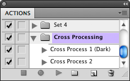
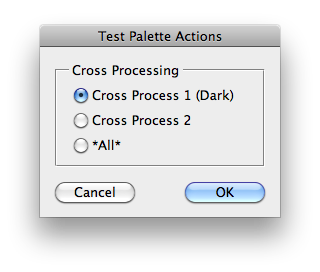

This script is part of the set of Test Scripts coming with the JSON Action Manager scripting library.
It shows how to play a specific action from the Actions Palette:

Back to JSON Action Manager Test Scripts
.jpg "Test Palette Actions | Cross Processing > Cross Process 1 (Dark)")